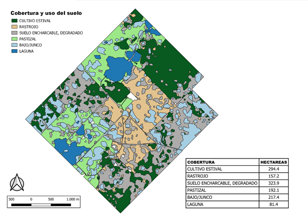

Solumagro es un laboratorio agronómico fundado en 2009 en Carlos Casares, Buenos Aires. Nos especializamos en análisis de suelos, semillas, aguas y forrajes, junto con interpretación de resultados y recomendaciones agronómicas.
Formamos parte del Grupo SAMLA y participamos en las Rondas Interlaboratorios Proinsa.
También ofrecemos consultoría basada en teledetección e imágenes satelitales para mejorar el manejo agronómico, evaluar establecimientos y optimizar su desempeño productivo.
Este servicio resulta fundamental para los Productores agropecuarios, Criaderos, Semilleros multiplicadores y Comerciantes de semillas Realizamos ensayos de germinación, vigor, pureza física y botánica. Los análisis de esta área, realizados según normas internacionales ISTA, a las cuales adhiere INASE, permiten conocer la calidad física y fisiológica, de las semillas, como uno de los primeros pasos necesarios para alcanzar la máxima eficiencia en el manejo agronómico de los cultivos. Número de inscripción en el RNCyFS: I/8204
Realizamos análisis físico químico de aguas con especial énfasis en su uso agropecuario, tanto ganadero, como fuente de riego o como vehículo de aplicaciones de fitosanitarios
Realizamos análisis de forrajes de manera de conocer las propiedades nutricionales, tanto de forraje fresco, silajes, henos y subproductos de la industria. De esta forma le damos un uso más eficiente a nuestros recursos en la alimentación de los rodeos.
